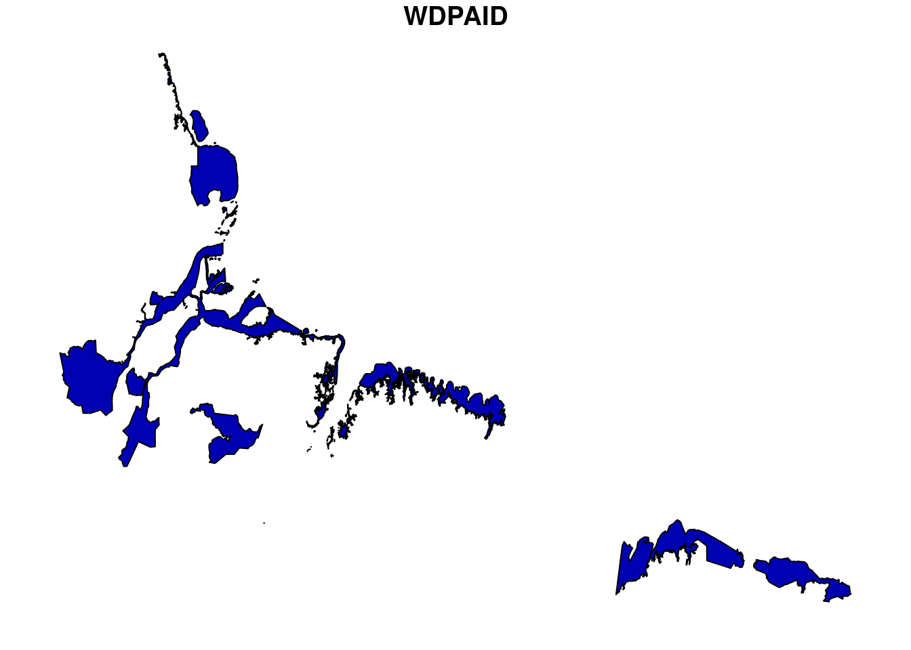

Mangrove Gain and Loss
Om Prakash Bhandari (Author), Johannes Schielein (Review)
3/30/2021
Last updated: 2021-09-15
Checks: 7 0
Knit directory: mapme.protectedareas/
This reproducible R Markdown analysis was created with workflowr (version 1.6.2). The Checks tab describes the reproducibility checks that were applied when the results were created. The Past versions tab lists the development history.
Great! Since the R Markdown file has been committed to the Git repository, you know the exact version of the code that produced these results.
Great job! The global environment was empty. Objects defined in the global environment can affect the analysis in your R Markdown file in unknown ways. For reproduciblity it’s best to always run the code in an empty environment.
The command set.seed(20210305) was run prior to running the code in the R Markdown file. Setting a seed ensures that any results that rely on randomness, e.g. subsampling or permutations, are reproducible.
Great job! Recording the operating system, R version, and package versions is critical for reproducibility.
Nice! There were no cached chunks for this analysis, so you can be confident that you successfully produced the results during this run.
Great job! Using relative paths to the files within your workflowr project makes it easier to run your code on other machines.
Great! You are using Git for version control. Tracking code development and connecting the code version to the results is critical for reproducibility.
The results in this page were generated with repository version 2fc3683. See the Past versions tab to see a history of the changes made to the R Markdown and HTML files.
Note that you need to be careful to ensure that all relevant files for the analysis have been committed to Git prior to generating the results (you can use wflow_publish or wflow_git_commit). workflowr only checks the R Markdown file, but you know if there are other scripts or data files that it depends on. Below is the status of the Git repository when the results were generated:
Ignored files:
Ignored: .RData
Ignored: .Rhistory
Ignored: .Rproj.user/
Ignored: data-raw/addons/docs/rest/
Ignored: data-raw/addons/etc/
Ignored: data-raw/addons/scripts/
Untracked files:
Untracked: .tmp/
Note that any generated files, e.g. HTML, png, CSS, etc., are not included in this status report because it is ok for generated content to have uncommitted changes.
These are the previous versions of the repository in which changes were made to the R Markdown (analysis/gmw-mangrove.rmd) and HTML (docs/gmw-mangrove.html) files. If you’ve configured a remote Git repository (see ?wflow_git_remote), click on the hyperlinks in the table below to view the files as they were in that past version.
| File | Version | Author | Date | Message |
|---|---|---|---|---|
| html | d1cfe2d | Johannes Schielein | 2021-09-15 | initial comit with sampling code |
| Rmd | b589068 | Ohm-Np | 2021-07-03 | update author names, urls & source code description |
| html | 1468f42 | Ohm-Np | 2021-07-03 | update html files |
| Rmd | b8e6cf8 | Ohm-Np | 2021-07-01 | improved mangrove rmd analysis |
| html | 220ac66 | Ohm-Np | 2021-07-01 | update mangrove html file |
| html | fa42f34 | Johannes Schielein | 2021-07-01 | Host with GitHub. |
| html | 8bd1321 | Johannes Schielein | 2021-06-30 | Host with GitLab. |
| html | 3a39ee3 | Johannes Schielein | 2021-06-30 | Host with GitHub. |
| html | ae67dca | Johannes Schielein | 2021-06-30 | Host with GitLab. |
| Rmd | cde4ff4 | GitHub | 2021-05-03 | Update gmw-mangrove.rmd |
| Rmd | 3befd22 | ombhandari | 2021-04-06 | update mangrove rmd |
| html | 3befd22 | ombhandari | 2021-04-06 | update mangrove rmd |
# load required libraries
library("sf")
library("wdpar")
library("dplyr")
starttime<-Sys.time() # mark the start time of this routine to calculate processing time at the endWe will now use a function from our repository. If you have downloaded our repository to your local machine, you can call the function as given below with the sourcecommand. If you do not have a local copy, you can download the source-code for the function here.
source("code/area_proj.R")Introduction
Mangrove is tropical coastal vegetation and considered the most significant part of the marine ecosystem and provides a link between the sea and the land. Hence, considered one of the world’s dominant coastal ecosystem. There have been subsequent changes in the extent of mangroves since decades. The changes might be in the form of gain or loss. Global Mangrove Watch is an open source platform offering remote sensing data and tools for monitoring mangroves around the globe. The main purpose of this routine is to carry out analysis on the protected area level to see whether the extent of mangroves within definite PAs is increasing or decreasing.
Datasource and Metadata Information
- Dataset: Global Mangrove Watch - World Conservation Monitoring Centre (WCMC)[1]
- Geographical Coverage: Global
- Spatial Resolution: ~25 meter
- Temporal Coverage: 1996-2016
- Temporal Resolution: Periodic updates(1996, 2007-2010, 2015, 2016)
- Data downloaded: 17th March, 2021
- Metadata Link
- Download Link
Processing Workflow
The processing routine:

Download and prepare WDPA polygon
For this analysis, we would take one polygon data from Brazil using package wdpar, which is closer to coastal region so that the extent of mangroves can be analyzed. wdpar is a library to interface to the World Database on Protected Areas (WDPA). The library is used to monitor the performance of existing PAs and determine priority areas for the establishment of new PAs. We will use Brazil - for other countries of your choice, simply provide the country name or the ISO name e.g. GY for Guyana, COL for Colombia.
# fetch the raw data from wdpar of country
br <-
wdpar::wdpa_fetch("BRA")
# subset a wdpa polygon by it's wdpa id
br_subset <- br%>%
filter(WDPAID %in% 555637331)The next immediate step would be to clean the fetched raw data with the functionality provided with routines from the wdpar package. Cleaning is done by the package following these steps:
- exclude protected areas that are not yet implemented
- exclude protected areas with limited conservation value
- replace missing data codes (e.g. “0”) with missing data values (i.e. NA)
- replace protected areas represented as points with circular protected areas that correspond to their reported extent
- repair any topological issues with the geometries
# clean the data
br_subset <- wdpa_clean(br_subset,
erase_overlaps = FALSE)Lets have a look at the selected polygon data.
plot(br_subset[1])
Prepare mangrove polygon
Global mangrove watch provides the mangrove data for the years 1996 to 2016 with periodic updates in between. The datasets have been stored in the datalake as the geopackage. The stored datasets are downloaded directly from the Ocean Data Viewer as mentioned in the metadata above.
For this routine, we will first load the mangrove data for year 1996 to see the extent of mangrove for this particular year.
# load mangrove data for 1996
mangrove <-
st_read("../../datalake/mapme.protectedareas/input/global_mangrove_watch/gmw-v2-1996-valid.gpkg")Reading layer `global-mangrove-watch-1996-valid' from data source `/datadrive/datalake/mapme.protectedareas/input/global_mangrove_watch/gmw-v2-1996-valid.gpkg' using driver `GPKG'
Simple feature collection with 700904 features and 2 fields
Geometry type: POLYGON
Dimension: XY
Bounding box: xmin: -175.3396 ymin: -38.85667 xmax: 179.9796 ymax: 33.79933
Geodetic CRS: WGS 84Intersect mangrove polygon and WDPA polygon layer
After completing mangrove data and WDPA polygon preparation, we should now intersect the layers to crop out the desired extent from the global mangrove polygon. Before doing so, it is important to match the coordinate reference system of the polygons. For this, we will perform the coordinate transformation of the WDPA polygon to match with the CRS of mangrove data.
# reproject wdpa polygon to match mangrove data
br_subset <- st_transform(br_subset,
st_crs(mangrove))Now, we can apply st_intersection function from the package sf to get the desired area of intersection between mangrove and wdpa polygon.
# apply intersection
m_subset <- st_intersection(mangrove,
br_subset)Compute mangrove area
Now, we have got the intersection polygon. Next step would be to compute the mangrove area. First we have to adopt adequate projection system. We must choose the projection system which preserves the area of the polygon. We will use the function area_projwhich takes bounding box of the polygon as input parameters and returns the proj4string, the projection system parameters in Lambert Azimuthal Equal Area projection.
# transform to laea using area_proj
m_sub <- st_transform(m_subset,
st_crs(area_proj(br_subset)))
# compute area in square km
m_sub$area_sqkm <- st_area(m_sub)%>%
sum()/1000000After area computation, lets view the result:
# view the result in data frame
df.gmw <- data.frame(WDPAID=m_sub$WDPAID[1],
area_sqkm=m_sub$area_sqkm[1])
df.gmw WDPAID area_sqkm
1 555637331 4898.962 [m^2]So, from the result above we can see that the area of mangrove for the WDPA ID 555637331 for the year 1996 is 4898.962 square km. Similarly, we can compute the mangrove area of the desired polygon/s following this routine.
In the end we are going to have a look how long the rendering of this file took so that we could get an idea about the processing speed of this routine.
stoptime<-Sys.time()
print(starttime-stoptime)Time difference of -12.02181 minsReferences
[1] Bunting P., Rosenqvist A., Lucas R., Rebelo L-M., Hilarides L., Thomas N., Hardy A., Itoh T., Shimada M. and Finlayson C.M. (2018). The Global Mangrove Watch – a New 2010 Global Baseline of Mangrove Extent. Remote Sensing 10(10): 1669. doi:10.3390/rs10101669.
sessionInfo()R version 3.6.3 (2020-02-29)
Platform: x86_64-pc-linux-gnu (64-bit)
Running under: Ubuntu 18.04.5 LTS
Matrix products: default
BLAS: /usr/lib/x86_64-linux-gnu/blas/libblas.so.3.7.1
LAPACK: /usr/lib/x86_64-linux-gnu/lapack/liblapack.so.3.7.1
locale:
[1] LC_CTYPE=C.UTF-8 LC_NUMERIC=C LC_TIME=C.UTF-8
[4] LC_COLLATE=C.UTF-8 LC_MONETARY=C.UTF-8 LC_MESSAGES=C.UTF-8
[7] LC_PAPER=C.UTF-8 LC_NAME=C LC_ADDRESS=C
[10] LC_TELEPHONE=C LC_MEASUREMENT=C.UTF-8 LC_IDENTIFICATION=C
attached base packages:
[1] stats graphics grDevices utils datasets methods base
other attached packages:
[1] dplyr_1.0.6 wdpar_1.0.6 sf_0.9-8
loaded via a namespace (and not attached):
[1] Rcpp_1.0.7 pillar_1.6.0 compiler_3.6.3 later_1.2.0
[5] git2r_0.28.0 workflowr_1.6.2 class_7.3-19 tools_3.6.3
[9] digest_0.6.27 evaluate_0.14 lifecycle_1.0.0 tibble_3.1.1
[13] pkgconfig_2.0.3 rlang_0.4.11 DBI_1.1.1 curl_4.3.2
[17] yaml_2.2.1 xfun_0.24 e1071_1.7-7 httr_1.4.2
[21] stringr_1.4.0 knitr_1.30 rappdirs_0.3.3 generics_0.1.0
[25] fs_1.5.0 vctrs_0.3.8 tidyselect_1.1.1 classInt_0.4-3
[29] rprojroot_2.0.2 grid_3.6.3 glue_1.4.2 R6_2.5.0
[33] fansi_0.5.0 rmarkdown_2.6 purrr_0.3.4 magrittr_2.0.1
[37] whisker_0.4 units_0.7-1 promises_1.2.0.1 ellipsis_0.3.2
[41] htmltools_0.5.1.1 assertthat_0.2.1 countrycode_1.2.0 httpuv_1.6.1
[45] utf8_1.2.1 KernSmooth_2.23-20 stringi_1.6.2 proxy_0.4-26
[49] lwgeom_0.2-6 crayon_1.4.1